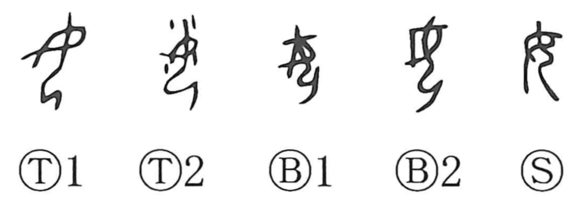

女

Kun: onna, me, musume | On: jo, nyo, nyou
woman ・ female ・ you (archaic)
Explanation
女 pictures a kneeling woman with her hands placed together before her. The posture is one of reverence at a sacred place, attending to a spiritual presence. The early figure remains recognizable behind the crossed modern strokes.
The word names a woman or female and can refer to a daughter or unmarried young woman. As a verb it concerns marriage, including giving a woman in marriage or taking her as a wife. The same human figure appears in many formations involving kinship and ritual roles; 安 places her beneath the roof of an ancestral shrine.
女 was also borrowed as the second-person pronoun, ‘you.’ The later 汝 serves that use as well. This grammatical function develops through sound beside the original female figure.